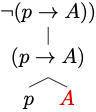

2 Formal Language
The language of propositional logic will allow us to model and study the validity of an important class of argument forms underwritten by the behavior of propositional connectives such as ‘not’, ‘and’ and ‘or’. To describe the language of propositional logic, we will specify:
a syntax for the formal language, which will include a vocabulary of symbols used in the language and a set of grammatical rules designed to specify which sequences of symbols are counted as sentences of the language, and
a semantics for the formal language, which will explain how to interpret the language and what is for a sentence to be true under such an interpretation.
But first, we need some preliminaries.
Quotation and Metavariables
Notice that in order to describe a language, whether formal or natural, we will have to be able to refer to its expressions. When the target is a natural language such as English, we use quotation marks in order to mention a linguistic expression.
Example 2.1 The expression ‘Los Angeles’ is used in one of the two sentences below, and it is mentioned the other:
Los Angeles is composed of more than eighty cities.
‘Los Angeles’ is composed of two words.
The contrast we seek is between the use of a natural language expression to mean what it means in natural language and the mere mention of that expression to mean the expression itself, not what it means in natural language. In the former example, the name in question is used in the first sentence to mean what it ordinarily means in natural language, i.e., a city in southern California, but the name is merely mentioned in the second sentence to mean the very linguistic expression composed of two different words, e.g., ‘Los’ and ‘Angeles’.2 Abbott and Costello’s Who’s on First illustrates the risk of conflating use and mention.
Example 2.2 The Arabic numeral ‘1’ is used in one of the sentences below and it is mentioned in the other:
‘1’ is an Arabic numeral for the successor of 0.
1 is the remainder of 7 divided by 3.
Quotation marks afford us the means to mention a natural language expression and to discuss its linguistic features, but we sometimes seek to make generalizations over linguistic expressions. We may want to express the fact that whenever something is an English sentence, the concatenation of the expression ‘it is not the case that’ and that sentence form another sentence of English. One way to do this is to use Greek letters as metavariables to range over sentences:
Example 2.3 Greek letters may be used as metavariables over sentences of English in the two sentences below:
If \(\varphi\) is a sentence of English, then the concatenation of the expression ‘it is not the case that’ and \(\varphi\) is another sentence of English.
If we let \(\varphi\) be the sentence ‘water is H2O’ then the expression ‘it is not the case that \(\varphi\)’ is the sentence ‘it is not the case that water is H2O’.3 To ease notation, we may use ‘it is not the case that \(\varphi\)’ as an abbreviation for the concatenation of ‘it is not the case that’ and \(\varphi\).
We will reserve the use of quotation marks for expressions of natural language in order to avoid confusion between use and mention. That means that we will avoid the use quotation marks for expressions of the formal language unless, that is, there is a risk of confusion. On the other hand, we will make frequent use Greek letters as metavariables for expressions of the formal language being introduced.
Syntax
We will now specify the syntax of propositional logic in two stages. We will first specify the vocabulary of the language, and we will then explain how to combine the symbols of the language in order to produce sentences of the language.
Vocabulary The vocabulary of propositional logic contains three types of symbols:
- Propositional Variables
-
These are the lowercase letters \(p\), \(q\), \(r\), \(s\), and \(t\) with or without numerical subscripts: \[ p, q, r, s, t \]
- Connectives
-
These symbols formal counterparts of the natural language connectives ‘not’, ‘or’, ‘and’, and ‘if \(\dots\), then \(\dots\)’: \[ \neg, \vee, \wedge, \to \]
- Parentheses
-
There are two parentheses: \[ ), ( \]
-
Nothing else is a symbol of the language.
Grammar
The role of grammar for a language is to explain how to combine symbols of the vocabulary into sentences of the language. For propositional logic, we use three main clauses for the characterization of formula. They explain how to generate more complex formulas from simpler formulas with the help of a connective.
- Formula
-
We define what is for an expression to be a formula of propositional logic.
- All propositional variables are formulas.
- If \(\varphi\) and \(\psi\) are formulas, then each of
\[
\neg \varphi, (\varphi \wedge \psi), (\varphi \vee \psi), (\varphi \to \psi)
\]
is a formula.
- Nothing else is a formula.
It will be helpful to look at concrete uses of the characterization in order to justify the fact that certain sequences of symbols are, or not, formulas of propositional logic.
 The construction tree for the formula \((p
\vee (q \to \neg r))\).
The construction tree for the formula \((p
\vee (q \to \neg r))\).
Example 2.4 The expression below is a formula: \[ (p \vee (q \to \neg r)) \] Here is a brief justification:
By rule 2, the expression \((p \vee (q \to \neg r))\) is a formula if both the expression \(p\) and the expression \((q \to \neg r)\) are formulas.
By rule 1, the expression \(p\) is a formula.
By rule 2, the expression \((q \to \neg r)\) is a formula if both the expression \(q\) and the expression \(\neg r\) are formulas.
By rule 1, the expression \(q\) is a formula.
By rule 2, the expression \(\neg r\) is a formula if \(r\) is a formula.
By rule 1, the expression \(r\) is a formula.
Therefore, we conclude that \((p \vee (q \to \neg r))\) is a formula.
The definition may similarly be used to justify the fact that a given string of symbols is not a sentence of propositional logic.
 There is no available construction tree.
Example 2.5 The expression below is not a formula of propositional logic: \[ \neg (p \to A) \]
By rule 2, the expression \(\neg (p \to A)\) is a formula if the expression \((p \to A)\) is a formula.
By rule 2, the expression \((p \to A)\) is a formula if both the expression \(p\) and the expression \(A\) are formulas.
By rule 1, the expression \(p\) is a formula.
By rule 3, the expression \(A\) is not a formula, since it is neither a propositional variable nor the outcome of one of the procedures described by rule 2.
Therefore, by rule 3, \(\neg (p \to A)\) is not a formula.
We have explained how to construct complex formulas from simpler ones by means of very strict formation rules. Such sentences may sometimes become difficult to parse and tedious to write. For ease of expression, we will adopt a further notational conventions which will allow us to simplify notation. This is not meant as a revision of the official characterization of formula as it is not part of the official syntax of the language. The point of the rule instead is to allow us to use certain expressions as abbreviations for the official formulas of the language.
- Notational Convention
-
We may remove the outer parentheses from a formula that is not part of another formula.
Example 2.6 We are able to use the expression \[ p \to q \] is an abbreviation for the formula \[ (p \to q) \]
Example 2.7 We are similarly able to remove the outer parentheses of the formula: \[ ((p \vee q) \vee r) \] to obtain: \[ (p \vee q) \vee r. \] as an abbreviation of the first formula.
Semantics
We will use assignments of truth values to propositional variables in order to interpret the language of propositional logic.
Definition 2.1 An assignment \(A\) for propositional logic maps every propositional variable into exactly one truth value (\(T\) or \(F\)).
We will declare a sentence of propositional logic to be true or false relative to an assignment of truth values to the propositional variables.
- Truth under an Assignment
-
We define what is for a sentence to be true under an assignment \(A\):
A propositional variable \(p\) is true relative to \(A\) if, and only if, the assignnment maps \(p\) into \(T\).
A negation \(\neg \varphi\) is true relative to \(A\) if and only if \(\varphi\) is not true relative to \(A\).
A conjunction \((\varphi \wedge \psi)\) is true relative to \(A\) if and only if \(\varphi\) is true under \(A\) and \(\psi\) is true relative to \(A\).
A disjunction \((\varphi \vee \psi)\) is true relative to \(A\) if and only if \(\varphi\) is true under \(A\) or \(\psi\) is true relative to \(A\).
A conditional \((\varphi \to \psi)\) is true relative to \(A\) if and only if \(\varphi\) is not true under \(A\) or \(\psi\) is true relative to \(A\).
We use truth tables to represent how the truth value of complex sentences depends on the truth values of their simpler sentences. The following truth tables summarize the semantic clauses for negation, conjunction, disjunction, and the material conditional.
- Negation
-
Given a sentence \(\varphi\), the truth value of the negation \(\neg \varphi\) under an assignment is a function of the truth value of \(\varphi\) under the assignment.
Truth table for \(\neg\) \[ \begin{array}{|c|c|} \hline \varphi & \neg \varphi \\ \hline T & F \\ F & T \\ \hline \end{array} \]
- Conjunction
-
Given two sentences \(\varphi\) and \(\psi\), the truth value of the conjunction \((\varphi \wedge \psi)\) under an assignment is a function of the truth values of \(\varphi\) and \(\psi\) under the assignment.
Truth table for \(\wedge\) \[ \begin{array}{|c|c|c|} \hline \varphi & \psi & (\varphi \wedge \psi) \\ \hline T & T & T \\ T & F & F \\ F & T & F \\ F & F & F \\ \hline \end{array} \]
- Disjunction
-
Given two sentences \(\varphi\) and \(\psi\), the truth value of the disjunction \((\varphi \vee \psi)\) under an assignment is a function of the truth values of \(\varphi\) and \(\psi\) under the assignment.
Truth table for \(\vee\) \[ \begin{array}{|c|c|c|} \hline \varphi & \psi & (\varphi \vee \psi) \\ \hline T & T & T \\ T & F & T \\ F & T & T \\ F & F & F \\ \hline \end{array} \]
- Conditional
-
Given two sentences \(\varphi\) and \(\psi\), the truth value of the material conditional \((\varphi \wedge \psi)\) under an assignment is a function of the truth values of \(\varphi\) and \(\psi\) under the assignment.
Truth table for \(\to\) \[ \begin{array}{|c|c|c|} \hline \varphi & \psi & (\varphi \to \psi) \\ \hline T & T & T \\ T & F & F \\ F & T & T \\ F & F & T \\ \hline \end{array} \]
We may use these rules to calculate the truth values of complex sentences of propositional logic relative to every assignment of truth values to its propositional variables.
Example 2.8 We may calculate the truth value of the sentence \[ \neg (p \wedge q) \] relative to every assignment in two stages, which correspond to the way in which the sentence has been constructed from simpler constituents: \[ \begin{array}{|c|c|c|c|} \hline p & q & (p \wedge q) & \neg (p \wedge q) \\ \hline T & T & T & \color{red}{F} \\ T & F & F & \color{red}{T}\\ F & T & F & \color{red}{T}\\ F & F & F & \color{red}{T} \\ \hline \end{array} \] That means that the sentence is false when both \(p\) and \(q\) are mapped into the truth value \(T\) and true otherwise.
Example 2.9 We may calculate the truth value of the sentence \[ \neg (q \to p) \] relative to every assignment in two stages: \[ \begin{array}{|c|c|c|c|} \hline p & q & (q \to p) & \neg (q \to p) \\ \hline T & T & T & \color{red}{F} \\ T & F & T & \color{red}{F}\\ F & T & F & \color{red}{T}\\ F & F & T & \color{red}{F} \\ \hline \end{array} \] That means that the sentence is true if \(p\) is false and \(q\) is true relative to an assignment and false otherwise.
Example 2.10 We may now combine the two truth tables in order to produce a truth table for the complex sentence: \[ \neg (p \wedge q) \vee \neg (q \to p) \] \[ \begin{array}{|c|c|c|c|c|} \hline p & q & \neg (p \wedge q) & \neg (q \to p) & (\neg (p \wedge q) \vee \neg (q \to p)) \\ \hline T & T & F & F & \color{red}{F}\\ T & F & T & F & \color{red}{T}\\ F & T & T & T & \color{red}{T}\\ F & F & T & F & \color{red}{T}\\ \hline \end{array} \]
That means that the formula is true under an assignment unless it assigns the truth value \(T\) to both \(p\) and \(q\)., which is the situation depicted by the first row of the truth table.
How to construct a truth table We want to develop a systematic procedure for constructing a complete truth table for a target sentence. We proceed in three steps:
We devote a column for each propositional variable occurring in a sentence followed by a column for each subsentence for the target sentence.
The number of propositional variables occurring in a sentence determines the number of rows for the truth table. Given \(n\) propositional variables, there are exactly \(2^n\) types of assignment to consider.4 That means that a truth table for a sentence containing \(3\) propositional variables will require \(8\) rows; one for a sentence containing \(4\) propositional letters will require \(16\) rows; etc. We start with the innermost column devoted to a propositional letter and we alternate occurrences of ‘\(T\)’ and ‘\(F\)’ until we populate the entire column. That is, \(2^0\) occurrences of ‘\(T\)’ followed by \(2^0\) occurrences of ‘\(F\)’. For the next column on the left, we alternate \(2^1\), e.g., \(2\) occurrences of ‘\(T\)’ with \(2^1\), e.g., \(2\) occurrences of ‘\(F\)’. More generally, for the \(n\)th column on the left of the innermost column devoted to a propositional letter, we alternate \(2^n\) occurrences of ‘\(T\)’ with \(2^n\) occurrences of ‘\(F\)’.
We populate each subsequent column for a subsetence of the target sentence as a function of the truth values for the relevant subsentences of it.
- Tautology
-
A formula \(\varphi\) is a tautology if, and only if, \(\varphi\) is true under all assignments of truth values to propositional variables.
Example 2.11 The formula \[ (p \to q) \vee (q \to p) \] is a tautology. \[ \begin{array}{|c|c|c|c|c|} \hline p & q & (p \to \neg q) & (q \to p) & (p \to q) \vee (q \to p) \\ \hline T & T & T & T & \color{red}{T}\\ T & F & F & T & \color{red}{T}\\ F & T & T & F & \color{red}{T}\\ F & F & T & T & \color{red}{T}\\ \hline \end{array} \]
- Contradiction
-
A formula \(\varphi\) is a contradiction if, and only if, \(\varphi\) is false under all assignments of truth values to propositional variables.
Example 2.12 The formula \[ \neg (p \to q) \wedge (q \vee \neg p) \] is a contradiction. \[ \begin{array}{|c|c|c|c|c|} \hline p & q & \neg (p \to q) & (q \vee \neg p) & \neg (p \to q) \wedge (q \vee \neg p) \\ \hline T & T & F & T & \color{red}{F}\\ T & F & T & F & \color{red}{F}\\ F & T & F & T & \color{red}{F}\\ F & F & F & T & \color{red}{F}\\ \hline \end{array} \]
- Equivalence
-
Two formulas \(\varphi\) and \(\psi\) are equivalent if, and only if, they are true under exactly the same assignments of truth values to propositional variables.
Example 2.13 The formulas \(p \to q\) and \(\neg p \vee q\) are equivalent because they are true under exactly the same assignments.
\[ \begin{array}{|c|c|c|c|} \hline p & q & p \to q & \neg p \vee q \\ \hline T & T & \color{red}{T} & \color{red}{T}\\ T & F & \color{red}{F} & \color{red}{F}\\ F & T & \color{red}{T} & \color{red}{T}\\ F & F & \color{red}{T} & \color{red}{T} \\ \hline \end{array} \]
- Consistency
-
A set of formulas is consistent if, and only if, there is at least one assignment of truth values to propositional variables under which all of its members are true. Otherwise, the set is inconsistent.
Example 2.14 The set \(\{p \to q, q \to r, r \to \neg p\}\) consists of three formulas: \(p \to q\), \(q \to r\) and \(\neg p\). Now, the set is consistent because there is at least one assignment under which they are all true. \[ \begin{array}{|c|c|c|c|c|c|} \hline p & q & r & p \to q & q \to r & r \to \neg p \\ \hline T & T & T & T & T & F\\ T & T & F & T & F & T\\ T & F & T & F & T & F\\ T & F & F & F & T & T\\ F & T & T & \color{red}{T} & \color{red}{T} & \color{red}{T}\\ F & T & F & T & F & T\\ F & F & T & \color{red}{T} & \color{red}{T} & \color{red}{T}\\ F & F & F & \color{red}{T} & \color{red}{T} & \color{red}{T}\\ \hline \end{array} \]
- Validity
-
An argument is valid if, and only if, there is no assignment of truth values to propositional variables under which all of its premises are true while its conclusion is false. Otherwise, the argument is invalid.
Example 2.15 Consider the argument given below:
\(p \vee q\)
\(p \to \neg r\)
\(\neg r \vee p\)
To assess its validity, we use a truth table to check whether there is some assignment on which the premises are true and the conclusion false: \[ \begin{array}{|c|c|c|c|c|c|} \hline p & q & r & p \vee q & p \to \neg r & \neg r \vee p \\ \hline T & T & T & T & F & T\\ T & T & F & T & T & T\\ T & F & T & T & F & T\\ T & F & F & T & T & T\\ F & T & T & \color{red}{T} & \color{red}{T} & \color{red}{F}\\ F & T & F & T & T & T\\ F & F & T & F & T & F\\ F & F & F & F & T & T\\ \hline \end{array} \] The fith row in the truth table corresponds to an assignment on which the two premises are true and the conclusion is false. So, we conclude that the argument is invalid.
Example 2.16 Consider the argument given below:
\(p \vee q\)
\(\neg (p \wedge \neg r)\)
\(r \to q\)
To assess its validity, we use a truth table to check whether there is some assignment on which the premises are true and the conclusion false: \[ \begin{array}{|c|c|c|c|c|c|} \hline p & q & r & p \vee q & \neg (p \wedge r) & r \to q \\ \hline T & T & T & T & F & T\\ T & T & F & T & T & T\\ T & F & T & T & F & F\\ T & F & F & T & T & T\\ F & T & T & T & T & T\\ F & T & F & T & T & T\\ F & F & T & F & T & F\\ F & F & F & F & T & T\\ \hline \end{array} \] There is in this case no assignment on which the two premises are true and the conclusion is false. So, we conclude that the argument is valid.
The Search for Counterexample Method
The method of truth tables is perfectly general, since it enables one to survey all assignments of truth values to the sentence letters involved in the argument. One issue, however, is that it may require one to draw very complex and cumbersome truth tables in cases in which more than 3 propositional variables are involved in the argument. A truth table for an argument in which 5 propositional variables occur requires \(2^5\), i.e., 32, rows; \(2^6\), i.e., 64 rows, if the argument involves 6 propositional variables, etc.
In those cases, we may proceed differently: we search for a counterexample. That is, we set out to construct an assignment on which the conclusion is false and the premises are true. There are two eventual outcoumes to this procedure. If we succeed, then the argument is invalid; if the construction of the assignment breaks down, then the argument is valid.
Example 2.17 Consider the argument given below:
\(p \wedge q\)
\(\neg r \to \neg q\)
\(p \to r\)
We proceed to outline an assignment that makes the conclusion false: \[ \begin{array}{|c|c|c|c|c|c|} \hline p & q & r & p \wedge q & \neg r\to \neg q & p \to r \\ \hline & & & & & \color{red}{F} \\ \hline \end{array} \] That requires \(p\) and \(r\) to be true and false, respectively: \[ \begin{array}{|c|c|c|c|c|c|} \hline p & q & r & p \wedge q & \neg p \to \neg q & p \to q \\ \hline T & & F & & & \color{red}{F} \\ \hline \end{array} \] Once we do, we set out to make the premises true. In particular, we realize we must make \(q\) true in order to verify \(p \wedge q\): \[ \begin{array}{|c|c|c|c|c|c|} \hline p & q & r & p \wedge q & \neg r \to \neg q & p \to r \\ \hline T & T & F & \color{red}{T} & & \color{red}{F} \\ \hline \end{array} \] On that assignment, we find that \(\neg p \to \neg q\) comes out true as well. \[ \begin{array}{|c|c|c|c|c|c|} \hline p & q & r & p \wedge q & \neg r \to \neg q & p \to r \\ \hline T & T & F & \color{red}{T} & \color{red}{T} & \color{red}{F} \\ \hline \end{array} \] So, we found an assignment on which all the premises are true and the conclusion is false. The argument is invalid.
Example 2.18 Consider the argument given below:
\(p \to (q \rightarrow r)\)
\(\neg (\neg p_1 \vee \neg p)\)
\((r \to p_2) \wedge (p_2 \to q)\)
\(q \vee r\)
We set out to make the conclusion false: \[ \begin{array}{|c|c|c|c|c|c|c|c|c|} \hline p & q & r & p_1 & p_2 & p \to (q \rightarrow r) & \neg (\neg p_1 \vee \neg p) & (r \to p_2) \wedge (p_2 \to q) & q \vee r \\ \hline & & & & & & & & \color{red}{F} \\ \hline \end{array} \] That requires \(q\) and \(r\) to be respectively false. \[ \begin{array}{|c|c|c|c|c|c|c|c|c|} \hline p & q & r & p_1 & p_2 & p \to (q \rightarrow r) & \neg (\neg p_1 \vee \neg p) & (r \to p_2) \wedge (p_2 \to q) & q \vee r \\ \hline & F & F & & & & & & \color{red}{F} \\ \hline \end{array} \] That in turn makes \((q \leftrightarrow r)\) true and \(\neg (q \leftrightarrow r)\) false. In order to make the first premise true, we must make \(p\) false: \[ \begin{array}{|c|c|c|c|c|c|c|c|c|} \hline p & q & r & p_1 & p_2 & p \to (q \rightarrow r) & \neg (\neg p_1 \vee \neg p) & (r \to p_2) \wedge (p_2 \to q) & q \vee r \\ \hline F & F & F & & & \color{red}{T} & & & \color{red}{F} \\ \hline \end{array} \]
But notice that the second premise will now come out false under the assignment. Since \(p\) is false, \(\neg p\) will be true as well as the disjunction \(\neg p_1 \vee \neg p\), which makes its negation false.
\[ \begin{array}{|c|c|c|c|c|c|c|c|c|} \hline p & q & r & p_1 & p_2 & p \to (q \rightarrow r) & \neg (\neg p_1 \vee \neg p) & (r \to p_2) \wedge (p_2 \to q) & q \vee r \\ \hline F & F & F & & & \color{red}{T} & \color{red}{F \ !} & & \color{red}{F} \\ \hline \end{array} \] We conclude that there is no assignment under which the premises are true and the conclusion is false. So, the argument is valid.
Exercises
Add quotation marks to the following sentences in order to obtain a true sentence of English. If there is more than one solution, make sure to explain why.
Los Angeles names a city in Southern California.
Los is part of Los Angeles.
Snow is white is a grammatical sentence of English.
What is monosyllabic but whatever is polysyllabic.
Determine whether each of the following expressions is a sentence of propositional logic.
\(\neg \neg A\)
\((p \to (\neg q))\)
\((p)\)
\((q \to (\neg \neg p \vee r))\)
Determine whether each of the following expressions is an abbreviation for a sentence of propositional logic.
\(p \to (q \wedge r)\)
\(p \to q \to r\)
\(p \vee (q \wedge r)\)
\(p \to (q\wedge r \to q)\)
Use the truth table method to determine whether each of the following sentences is a tautology, a contradiction, or neither a tautology or a contradiction.
\(((p \vee q) \to \neg (p \to q))\)
\(p \to (q \to p)\)
\(q \to (q \to p)\)
Use the truth table method to determine whether the following pairs of sentences are logically equivalent.
\(p \to q\), \(q \wedge \neg (p \vee q)\)
\(p \to p\), \(q \to q\)
Use the truth table method to determine whether the following sets of sentences are consistent.
\(\{ p, q, \neg (p \wedge q)\}\)
\(\{p \vee q, q \to r, \neg (p \wedge r)\}\)
Use the truth table method to determine whether the following arguments are valid.
\(p \to q\)
\(q \to r\)
\(r\)\(q \vee (p \wedge r)\)
\(\neg q\)
\(r\)
Use the search-for-counterexample method to determine whether the following arguments are valid.
\(p \to (q \vee r)\)
\(r \to (p \to q)\)
\(p\)
\(q\)\((p \to q) \wedge (q \to p)\)
\(\neg (p \wedge r)\)
\(\neg (r \to s)\)
\(s \to q\)